Text Signal Theory
The EDA notebook treats text as overlapping signals: topic, structure, sentiment, and ambiguity.
has_url, has_hashtag, has_mention, upper_ratio, punct_rationeg, neu, pos, compound = sia.polarity_scores(text)death, injury, emergency, violence, natural_disasterTarget, Missingness & Metadata Quality
Class balance is acceptable, but metadata quality is uneven: keyword is mostly present, location is not.
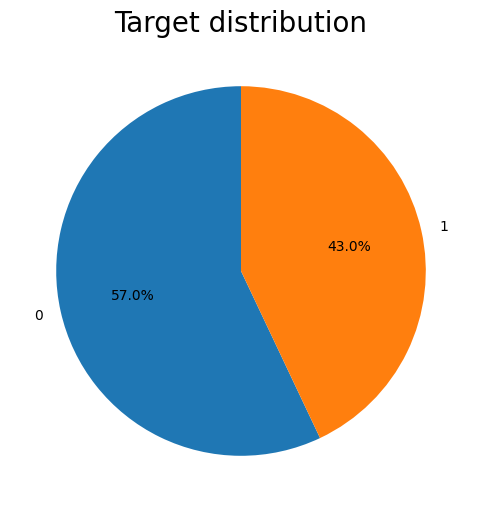
| Check | Notebook Output | Decision |
|---|---|---|
| Missing text | 0 missing values. | Text is the stable primary input. |
| Missing keyword | 61 rows, about 0.80%. | Keep keyword when present and merge with text. |
| Missing location | 2,533 rows, about 33.27%. | Drop location for the deployed model. |
| Class split | 57.03% normal, 42.97% disaster. | Track precision, recall, and F1, not accuracy alone. |
Keyword Risk Signal
The keyword field is sparse only in a tiny fraction of rows and often has strong target meaning.
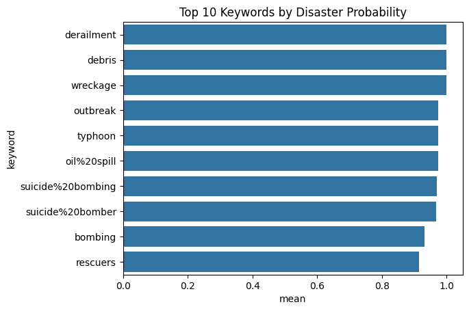
| Keyword | Count | Disaster Ratio |
|---|---|---|
derailment | 39 | 1.000 |
debris | 37 | 1.000 |
wreckage | 39 | 1.000 |
outbreak | 40 | 0.975 |
typhoon, oil spill | 38 | 0.974 |
keyword_stats = (
df.dropna(subset=["keyword"])
.groupby("keyword")["target"]
.agg(["count", "mean"])
.sort_values("mean", ascending=False)
)
top_keywords = keyword_stats.head(10)Length, Edge Cases & Structural Shape
Tweet length and structure are useful diagnostics, but the model still needs contextual sequence learning.
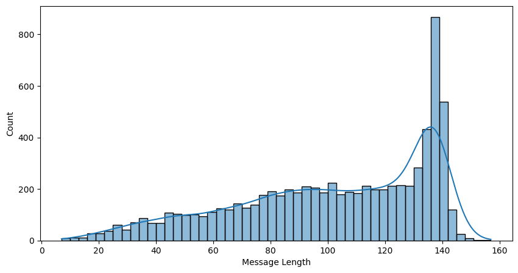
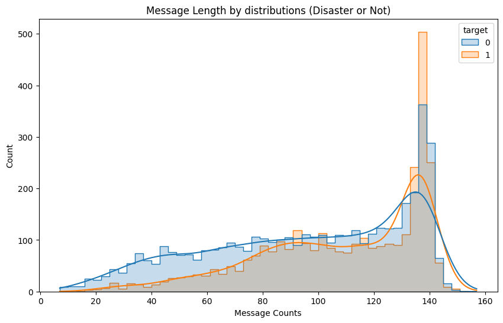
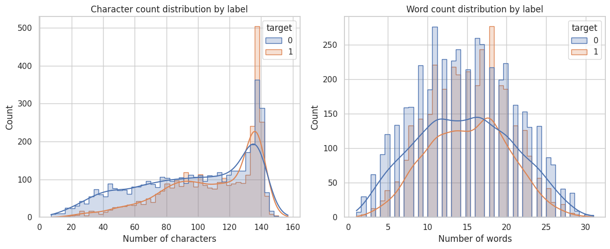
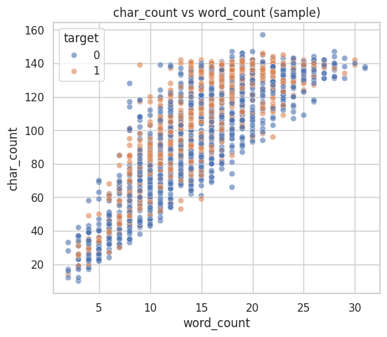
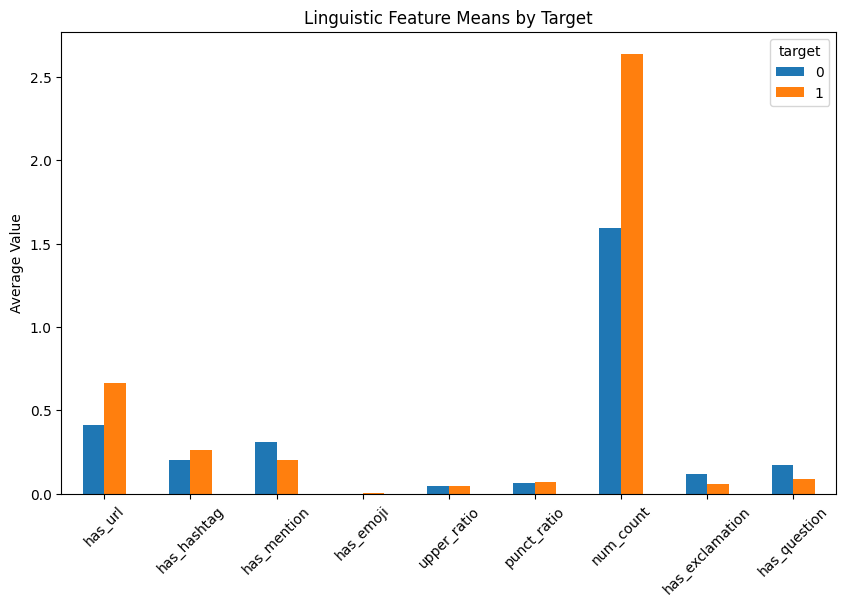
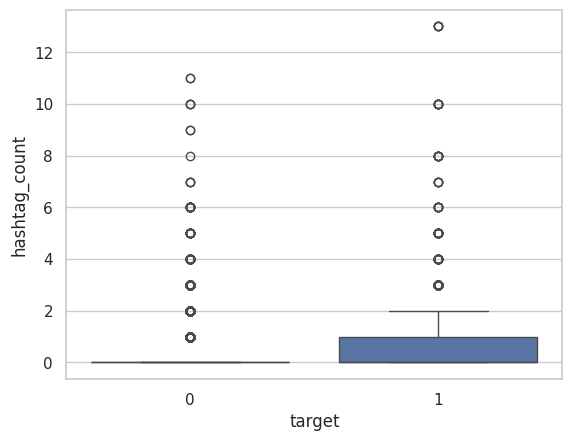
Words, WordClouds & N-Grams
The notebook checks both raw frequency and class-specific phrases to separate real disaster language from noisy social language.
| Disaster Common Words | Count | Normal Common Words | Count |
|---|---|---|---|
| fire | 151 | like | 250 |
| suicide | 103 | new | 163 |
| disaster | 97 | get | 161 |
| police | 94 | body | 106 |
| killed | 92 | love | 85 |
| Class-Specific N-Gram | Signal | Interpretation |
|---|---|---|
| suicide bomber | +4.09 | Strong disaster phrase. |
| northern california | +3.74 | Wildfire/reporting context. |
| california wildfire | +3.56 | Event-specific phrase. |
| cross body | -3.00 | Fashion/product false alarm. |
| body bag | -2.64 | Ambiguous phrase, often non-disaster. |
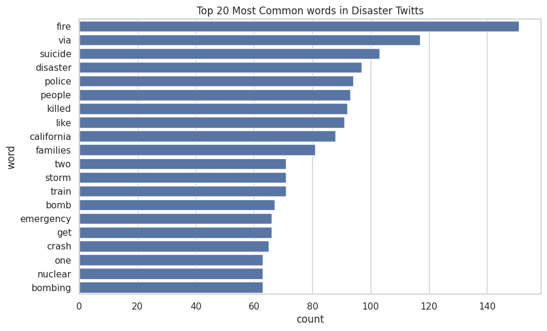
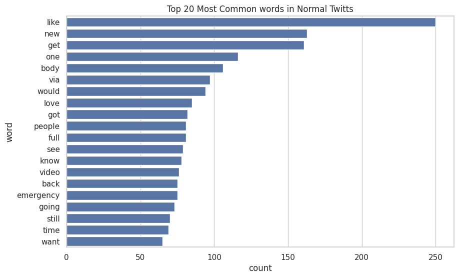
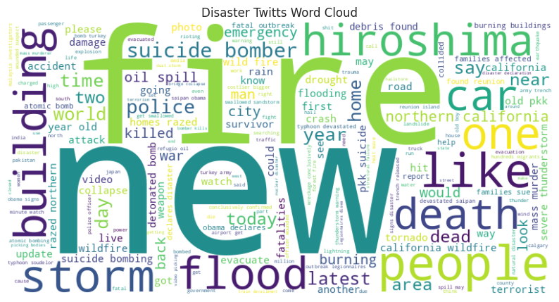
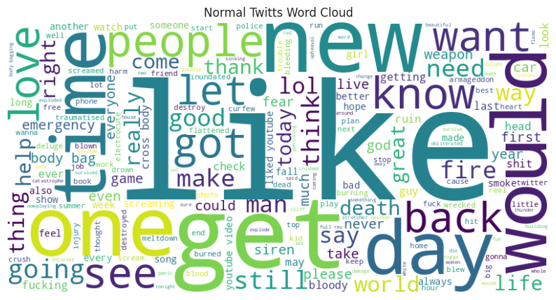
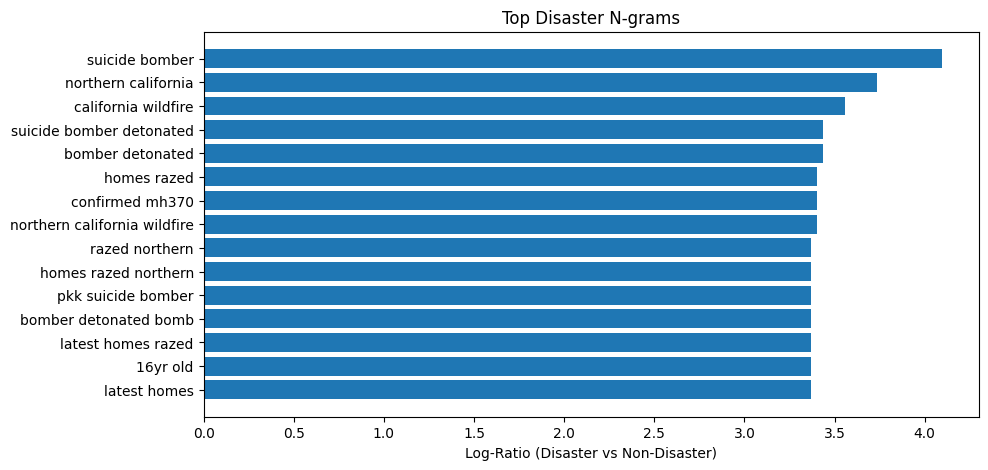
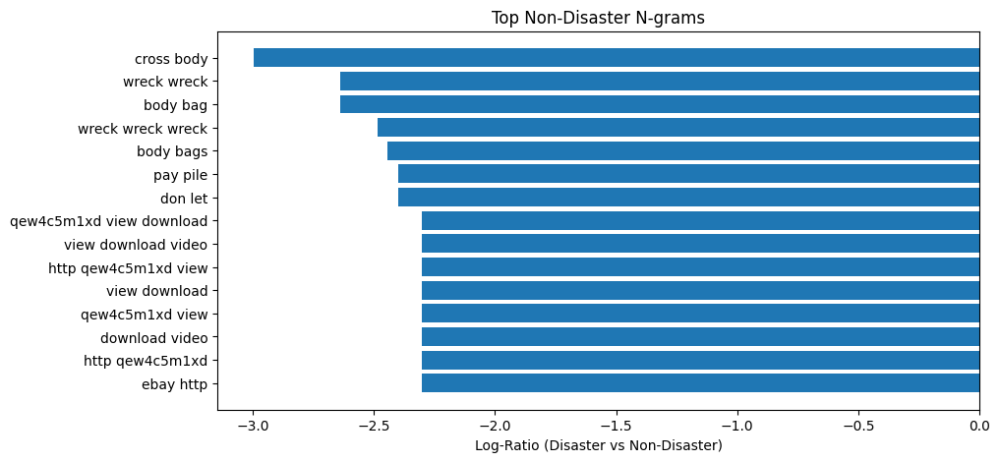
Hashtags, Sentiment, Danger Lexicons & POS
The notebook tests whether semantic cues are clean enough to trust, then identifies where they overlap.
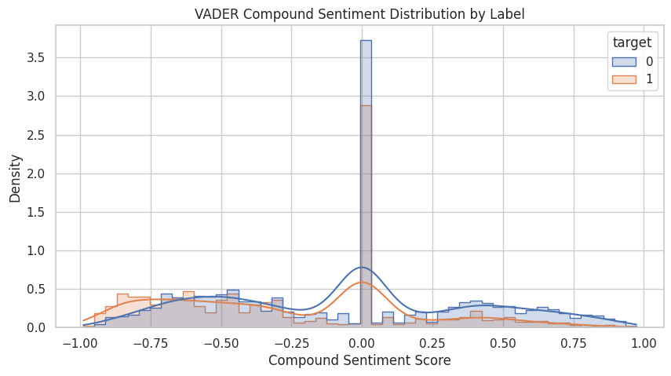
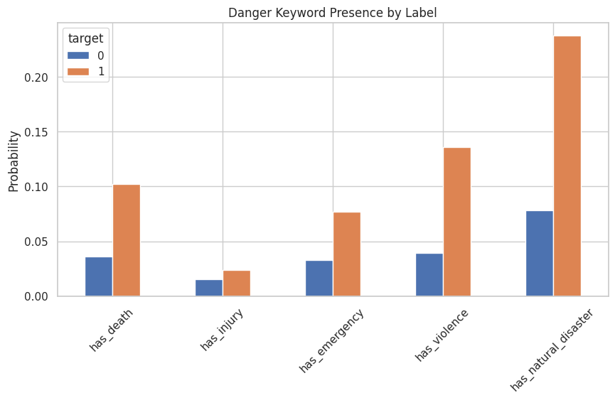
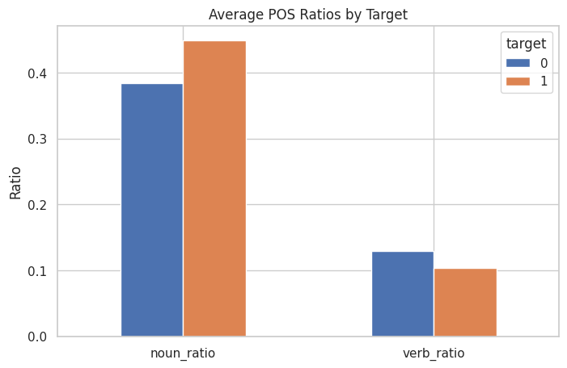
| Analysis | Notebook Result | Interpretation |
|---|---|---|
| Sentiment | Disaster compound mean -0.265 vs normal -0.061. | Disaster text is more negative on average, but overlap is too large for sentiment alone. |
| Danger lexicons | Natural-disaster terms appear in 23.8% of disaster tweets vs 7.8% of normal tweets. | Explicit danger words are useful but not complete; some real disasters lack them. |
| POS ratios | Disaster tweets have higher noun ratio, 0.449 vs 0.384, and lower verb ratio. | Real reports often name places, objects, events, and entities. |
| Hashtags | Disaster hashtags include news, hiroshima, earthquake, breaking. | Hashtags can carry topic signal but also marketing/noise. |
Complete EDA Figure Gallery
All exported EDA plots are included here so the page reflects the real notebook work.
Cleaning, Vocabulary & Dataset Encoding
The model receives fixed-length integer sequences produced from the same cleaning assumptions later used by the API.
def clean_text(text, config):
if config.LOWERCASE:
text = text.lower()
text = re.sub(r"https?://\S+|www\.\S+", " <URL> ", text)
text = re.sub(r"&", " and ", text)
text = re.sub(r"@\w+", " <USER> ", text)
text = re.sub(r"%20", " ", text)
text = re.sub(r"[^\x00-\x7F]+", " ", text)
text = re.sub(r"!{2,}", " !! ", text)
text = re.sub(r"\?{2,}", " ?? ", text)
text = re.sub(r"\b\d+\b", " <NUM> ", text)
return re.sub(r"\s+", " ", text).strip()def final_text_with_keyword(row, config):
keyword = clean_text(row["keyword"], config) if pd.notna(row["keyword"]) else ""
cleaned_text = clean_text(row["text"], config)
if config.USE_KEYWORD and keyword:
return f"{keyword} : {cleaned_text}"
return cleaned_text
df = preprocess_df(df, cfg)
df_train, df_val = train_test_split(df, train_size=0.8, random_state=28)| Component | Value | Role |
|---|---|---|
| Vocabulary | 10,000 tokens | Built from training text and exported as vocabs.json. |
| Special tokens | <PAD>=0, <UNK>=1 | Stable padding and fallback handling for unseen words. |
| Max length | 200 tokens | Fixed tensor shape for DataLoader and deployment. |
| Batch shape | [128, 200] | Notebook verified batched input IDs and label shape. |
| Unknown ratio | 0.0057 | Vocabulary covers the training corpus well. |
Frozen GloVe BiLSTM
The architecture balances contextual sequence modeling with a deployment-friendly parameter footprint.
DisasterTwittsClassifier(
(embedding): Embedding(10000, 100)
(lstm): LSTM(
input_size=100,
hidden_size=64,
num_layers=2,
batch_first=True,
dropout=0.28,
bidirectional=True
)
(dropout): Dropout(p=0.28)
(fc): Linear(in_features=128, out_features=1)
)| Design Choice | Notebook Setting | Purpose |
|---|---|---|
| Embedding source | GloVe 6B, 100d | Pretrained word semantics for short text. |
| Embedding mode | Frozen first experiment | Stable baseline and lower overfitting risk. |
| Unfreeze test | Embedding unfrozen after epoch 5 | Second experiment to test fine-tuning embeddings. |
| Classifier head | 128 to 1 linear layer | Concatenates forward/backward hidden states. |
| Loss | Weighted BCEWithLogitsLoss | Accounts for class imbalance during optimization. |
Metrics, Early Stopping & Results
The notebook monitors loss, accuracy, precision, recall, and F1, then tunes the classification threshold after training.
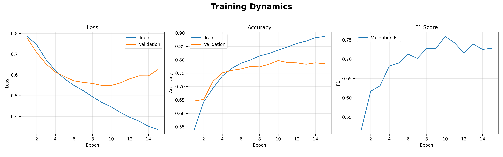
train_metrics = {"accuracy": BinaryAccuracy(threshold=0.5)}
val_metrics = {
"accuracy": BinaryAccuracy(threshold=0.5),
"precision": BinaryPrecision(threshold=0.5),
"recall": BinaryRecall(threshold=0.5),
"f1": BinaryF1Score(threshold=0.5),
}
criterion = nn.BCEWithLogitsLoss(pos_weight=pos_class_weight)
optimizer = optim.Adam(model.parameters(), lr=3e-4)
best_f1, best_t = find_best_threshold(model, val_dl)
torch.save(best_t, "best_threshold.pt")best_model.pt, best_threshold.pt, vocabs.json, label_mapping.json, training_history.json, and config.yaml.Notebook Logic Formalized as Modules
The project also has a script/module layout, which makes the training work reusable outside notebook cells.
def main():
CFG = TrainConfig()
seed_everything(CFG.SEED)
df = pd.read_csv(CFG.TRAIN_CSV)
df = preprocess_df(df, CFG)
train_df, val_df = train_test_split(
df,
train_size=CFG.TRAIN_TEST_SPLIT,
stratify=df["target"],
random_state=CFG.SEED,
shuffle=True,
)
vocab = build_vocab(train_df["final_text"], CFG)
save_vocabs(vocab, CFG.VOCAB_PATH)
train_loader = DataLoader(DisasterDataset(train_df, vocab, CFG), batch_size=128, shuffle=True)
val_loader = DataLoader(DisasterDataset(val_df, vocab, CFG), batch_size=128, shuffle=False)
embedding_matrix = load_embedding(CFG.GLOVE_PATH, vocab, CFG.EMB_DIM)
model = DisasterTwittsClassifier(..., embedding=embedding_matrix).to(CFG.DEVICE)API and UI Contract
Five routes cover health, UI rendering, JSON inference, form inference, and prediction history.
| Route | Interface | Purpose |
|---|---|---|
GET / | Jinja page | Render tweet form, result area, warnings, and error display. |
GET /health | JSON | Simple service readiness check. |
POST /predict | JSON API | Accept tweet and optional keyword; return prediction payload. |
POST /predict-ui | HTML form | Run prediction from browser UI and re-render the result. |
GET /logs | JSON list | Read recent SQLite prediction history with a bounded limit. |
class PredictRequest(BaseModel):
tweet: str = Field(..., min_length=1)
keyword: str | None = None
class PredictResponse(BaseModel):
probability: float
label: int
label_name: str
threshold: float
warnings: list[dict]@app.post("/predict", response_model=PredictResponse)
def predict(req: PredictRequest):
return run_prediction(tweet=req.tweet, keyword=req.keyword)
@app.post("/predict-ui", response_class=HTMLResponse)
def predict_ui(request: Request, tweet: str = Form(...), keyword: str = Form(default="")):
result = run_prediction(tweet=tweet, keyword=keyword.strip() or None)
return templates.TemplateResponse("index.html", {...})Startup Loads the Model Once
The app checks critical files, builds runtime state, and keeps request-time inference lightweight.
@asynccontextmanager
async def lifespan(app: FastAPI):
config = AppConfig()
seed_everything(config.SEED)
if not config.VOCAB_PATH.exists():
raise ArtifactError("VOCAB_NOT_FOUND", "Vocabulary file not found", {"path": str(config.VOCAB_PATH)})
if not config.MODEL_PATH.exists():
raise ArtifactError("MODEL_NOT_FOUND", "Model file not found", {"path": str(config.MODEL_PATH)})
word2idx, idx2word, vocab_size = load_vocabs(config.VOCAB_PATH)
predictor = DisasterTwittsPredictor.from_config(config, vocab_size)
predictor.load_label_mapping(config.LABEL_MAPPING_PATH)
db_conn = connect_db(config.DB_PATH)
init_db(db_conn)
app.state.config = config
app.state.word2idx = word2idx
app.state.predictor = predictor
app.state.db = db_conn
yield
db_conn.close()AppConfig mirrors training dimensions: embedding 100, hidden 64, two layers, dropout 0.28, max length 200.Validation, Tokenization & Inference
The API does the production work around the model: safe validation, consistent preprocessing, tensor conversion, prediction, and warnings.
def validate(self, tweet, keyword=None):
warnings = []
final_text = build_final_text(tweet, keyword=keyword, config=self.config)
if is_empty_text(final_text):
raise InputError("EMPTY_TWEET", "Tweet became empty after cleaning.")
tokens = final_text.split()
if len(tokens) < 3:
warnings.append(self._warning("SHORT_INPUT", "Input is very short."))
if len(tokens) > self.config.MAX_LENGTH:
warnings.append(self._warning("TRIMMED_LENGTH", "Input was trimmed."))
return final_text, warnings@torch.no_grad()
def predict(self, input_ids, input_length, return_label_name=True):
logits = self.model(input_ids, lengths=input_length)
prob = torch.sigmoid(logits).item()
label = 1 if prob >= self.threshold else 0
label_name = self.label_mapping.get(label, str(label))
return prob, label, label_namedef run_prediction(tweet: str, keyword: str | None = None) -> PredictResponse:
final_text, warnings = validator.validate(tweet, keyword=keyword)
input_ids, input_length = tokenize_and_pad(final_text, word2idx, config)
prob, label, label_name = predictor.predict(input_ids, input_length, return_label_name=True)
response = PredictResponse(
probability=prob,
label=label,
label_name=label_name,
threshold=predictor.threshold,
warnings=list(warnings),
)
log_prediction(db_conn, tweet=tweet, keyword=keyword, final_text=final_text, ...)
return responseBrowser UI for the Model
The Jinja page provides a real user-facing path with form state, prediction bars, result modes, warnings, and error panels.
result.label.{% set has_result = (result is not none) %}
{% set is_disaster = has_result and (result.label == 1) %}
{% set disaster_prob = ((result.probability * 100)|round(1)) if has_result else 0 %}
<form method="post" action="/predict-ui" class="card">
<textarea id="tweet" name="tweet" rows="6" required>{{ form_data.tweet }}</textarea>
<input id="keyword" name="keyword" type="text" value="{{ form_data.keyword }}" />
<button type="submit">Predict</button>
</form>
{% if result.warnings %}
<ul>{% for item in result.warnings %}<li>{{ item.warning_code }}: {{ item.message }}</li>{% endfor %}</ul>
{% endif %}Prediction Logging Schema
SQLite stores the request, cleaned model text, decision, threshold, and validation warnings for later inspection.
CREATE TABLE IF NOT EXISTS prediction_logs (
id INTEGER PRIMARY KEY AUTOINCREMENT,
created_at TEXT NOT NULL,
tweet TEXT NOT NULL,
keyword TEXT,
final_text TEXT NOT NULL,
probability REAL NOT NULL,
label INTEGER NOT NULL,
label_name TEXT NOT NULL,
threshold REAL NOT NULL,
warnings_json TEXT
);| Stored Field | Why It Exists |
|---|---|
tweet and keyword | Preserve raw user/API input. |
final_text | Debug the exact text sent to the model. |
probability and label_name | Make predictions auditable and readable. |
threshold | Record the decision boundary used for that prediction. |
warnings_json | Keep validation context such as short input or language suspicion. |
def log_prediction(conn, *, tweet, keyword, final_text, probability, label, label_name, threshold, warnings):
warnings_json = json.dumps(warnings or [], ensure_ascii=True)
created_at = datetime.now(timezone.utc).isoformat().replace("+00:00", "Z")
conn.execute(
"INSERT INTO prediction_logs (...) VALUES (?, ?, ?, ?, ?, ?, ?, ?, ?)",
(created_at, tweet, keyword, final_text, probability, label, label_name, threshold, warnings_json),
)
conn.commit()Dockerfile: Minimal Runtime With Non-Root User
The Dockerfile packages dependencies, application code, artifacts, and data into a Uvicorn service.
FROM python:3.11-slim
ENV PYTHONDONTWRITEBYTECODE=1 \
PYTHONUNBUFFERED=1 \
PIP_NO_CACHE_DIR=1
WORKDIR /app
RUN addgroup --system appgroup \
&& adduser --system --ingroup appgroup appuser
COPY requirements.txt .
RUN python -m pip install --no-cache-dir --retries 5 --timeout 120 -r requirements.txt
COPY app ./app
COPY artifacts ./artifacts
COPY data ./data
RUN mkdir -p /app/data && chown -R appuser:appgroup /app
USER appuser
EXPOSE 8000
CMD ["uvicorn", "app.api:app", "--host", "0.0.0.0", "--port", "8000"]| Dependency | Pinned Version | Role |
|---|---|---|
| FastAPI | 0.115.0 | Web framework and route layer. |
| Uvicorn | 0.30.6 | ASGI runtime server. |
| Pydantic | 2.9.2 | Request/response validation. |
| PyTorch CPU | 2.4.1 | Model inference inside container. |
| Jinja2 + python-multipart | 3.1.4 / 0.0.12 | HTML templates and form posts. |
| langdetect | 1.0.9 | Input language warning/rejection logic. |
Service Configuration, Volume & Healthcheck
Docker Compose gives the deployment a repeatable command, configurable port, persistent database volume, and restart policy.
services:
app:
build: .
image: disaster_tweets:latest
ports:
- "${APP_PORT:-8000}:8000"
environment:
APP_ENV: ${APP_ENV:-production}
DB_PATH: ${DB_PATH:-/app/data/predictions.db}
volumes:
- disaster_data:/app/data
healthcheck:
test: ["CMD", "python", "-c", "import urllib.request; urllib.request.urlopen('http://127.0.0.1:8000/docs', timeout=5)"]
interval: 30s
timeout: 10s
retries: 3
start_period: 20s
restart: unless-stopped
volumes:
disaster_data:APP_PORT lets the service bind to another host port without editing Compose.disaster_data keeps SQLite state separate from disposable containers.Why This Project Matters
The strength of the project is the full bridge from exploratory research to a working ML application.
This project is important because it shows the first professional deployment pattern: notebooks explain the data, PyTorch training produces reproducible artifacts, FastAPI exposes the model as both JSON and UI, Jinja makes the prediction flow testable in a browser, SQLite records inference context, and Docker Compose gives the app a portable runtime. The final shape is not just a classifier; it is a compact ML product skeleton.